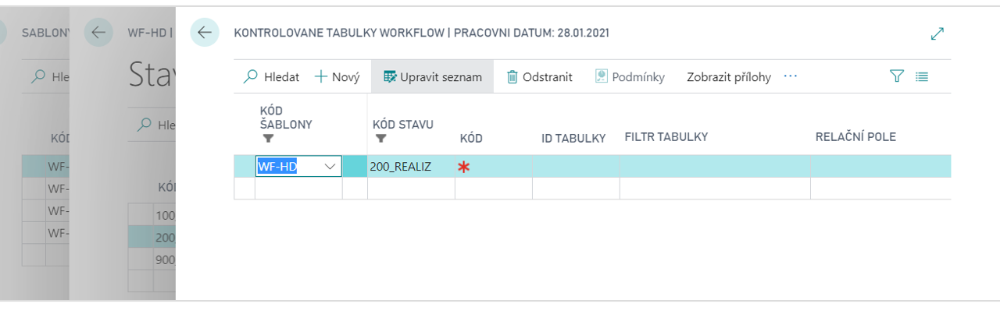

WorkFlow - kontrolované tabulky
Add-on modul Workflow – kontrolované tabulky rozšiřuje funkčnost add-on modulu Workflow o možnost kontroly záznamů nebo polí v tabulkách svázaných s tabulkou, která je řízena workflow. Stav workflow je pak povoleno změnit pouze pokud všechny kontroly v rámci kontrolovaných tabulek vyhovují. Praktické použití může být například toto:
- Pokud je použito workflow na dokladu s hlavičkou a řádky, například na Prodejní objednávce, lze kontrolovat, zda k hlavičce existují nějaké řádky, nebo řádky nějakého typu nebo obsahu. Např. že objednávka obsahuje alespoň jeden řádek se zbožím, nebo že má na všech řádcích vyplněnu cenu nebo lokaci nebo glob. dimenzi, apod.
- Lze kontrolovat, zda zdrojový záznam k nějakému poli v tabulce s použitým workflow obsahuje v dalších polích potřebná data – např. je-li na hlavičce dokladu vyplněno pole Kód prodejce, pak zkontroluje zda-li má tento prodejce vyplněn email.

Viz také
WorkFlow - kontrolované tabulky - nastavení
Productivity Pack